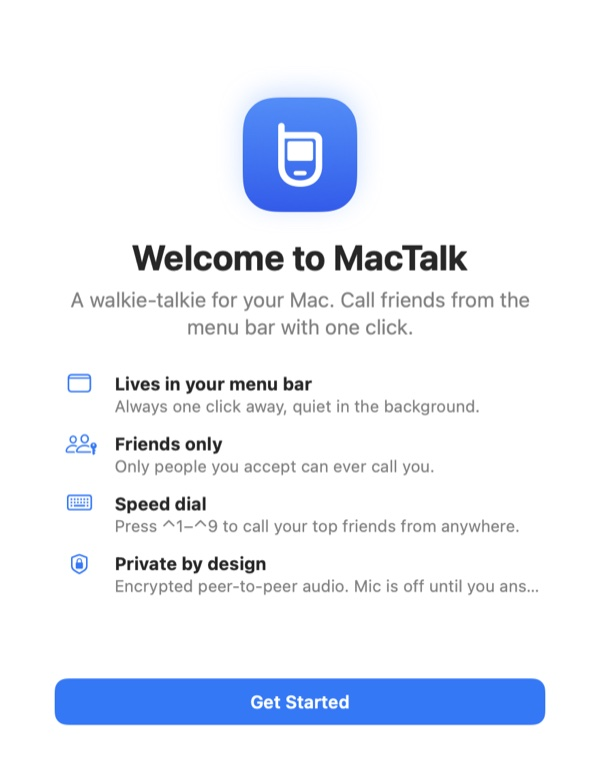
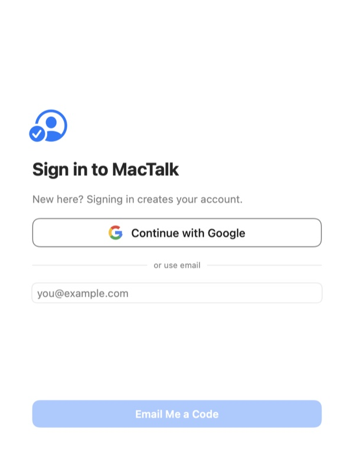
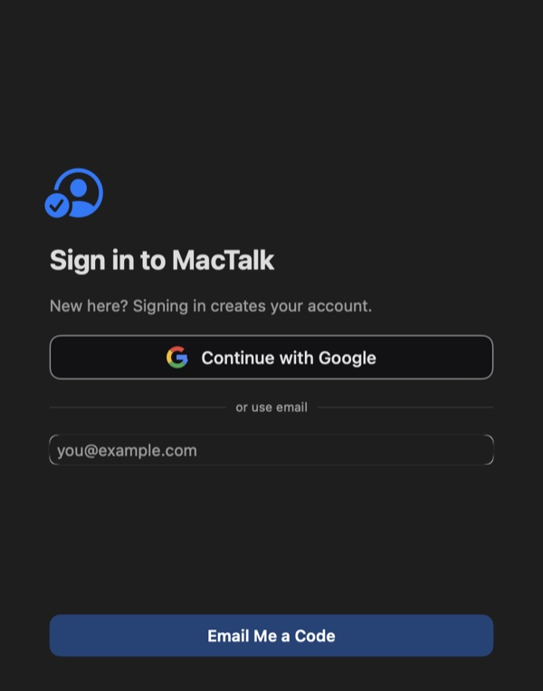
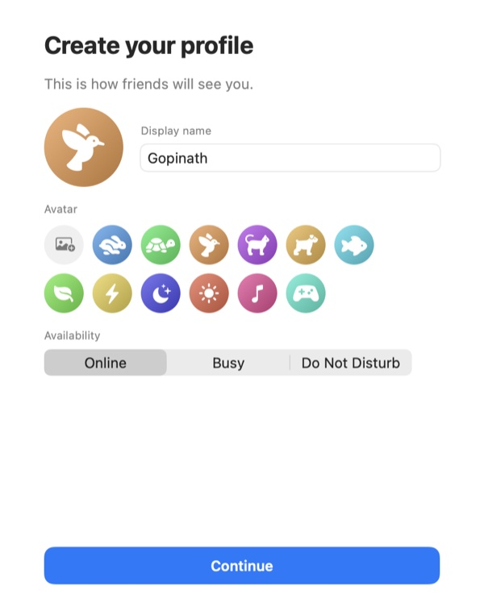

Welcome, sign in, set up a profile
Continue with Google, or get a one-time code by email; signing in for the first time creates the account. Then choose a display name, an avatar and your availability: Online, Busy or Do Not Disturb.




Release note. The build is signed ad hoc and not notarised. The first time, Control-click MacTalk in Applications and choose Open; on macOS 15 or later, if that is not offered, open System Settings › Privacy & Security and choose Open Anyway. The calling service isn't connected in this build yet, so the app opens to a “Configuration needed” screen until it is.
Screens are rendered from the app's own SwiftUI views with sample people and data. Built with Swift 6, SwiftUI and AppKit, WebRTC audio and a Supabase backend (Auth, Postgres with Row Level Security, Realtime). Source on GitHub ↗.